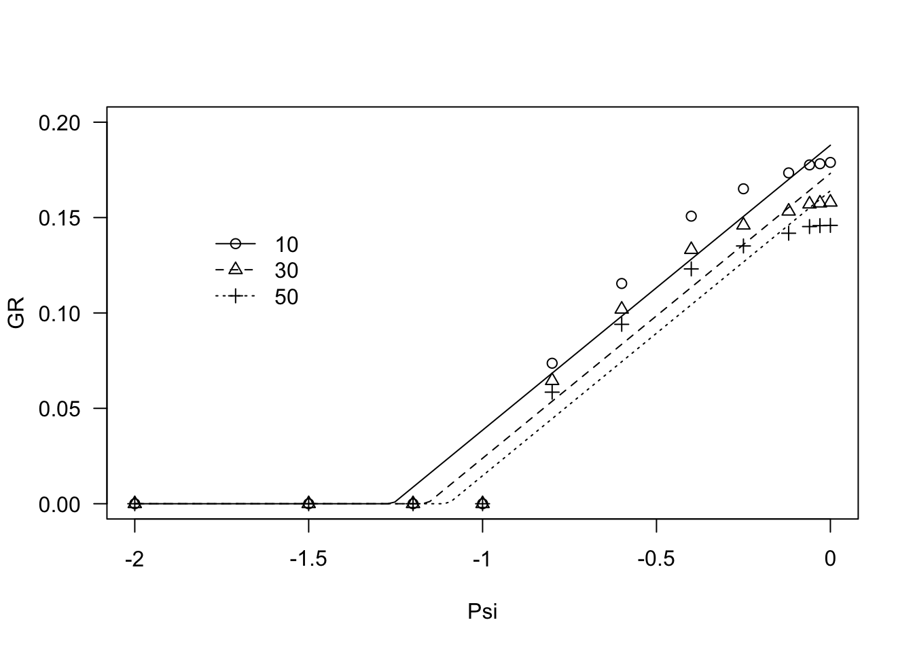
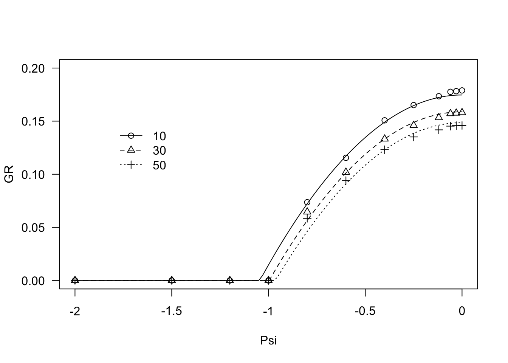
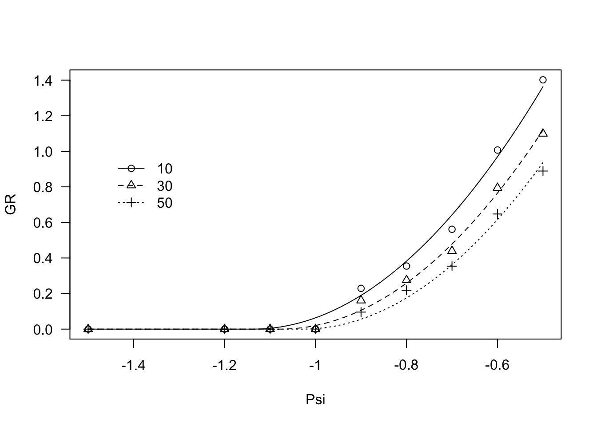

Fitting hydro-time models with R
Andrea Onofri
17 Marzo, 2020
Effect of humidity on germination
In a previous page we have seen that the median germination rate (GR50) of a seed sample is a very useful measure of germination speed. I would just like to remind that the germination rate for one seed is the fraction of germination that is accomplished in one day; at the population level, a GR50 of, e.g., 0.5 means that, at the end of first day, 50% of seeds were, at least, half-way in their germination process and, therefore, they germinated within the second day. A GR50 of 0 means that the final germination capability of the seed lot was less than 50%; for thir reason, the GR can also be ragarded as a measure of germination extent. Of course, we are not constrained to use the GR50, we can also use the germination rate for any other percentile, within the population.
The GR value for the selected percentile can be modeled as a function of environmental conditions, such as the humidity content in the germination substrate. In this latter case, the resulting models are known as hydro-time models. If we consider the GR50, the effect of water potential (\(\Psi\)) in the substrate is linear (Bradford, 2002), for any \(\Psi\) above the base water potential level (\(\Psi_{b,50}\)):
\[ GR50 = \frac{\Psi - \Psi_{b(50)}}{\theta_H} \quad \quad \quad \quad (1)\]
\(\Psi < \Psi_{b(50)}\), the GR50 is always 0. If we consider another germination percentile (e.g. GR10 or GR30), the relationship is similar, although the base water potential changes (e.g. \(\Psi_{b(10)}\) or \(\Psi_{b(30)}\)), while \(\theta_H\) is common for the whole population. This latter parameter represents the hydro-time constant and it is expressed as MPa day or MPa hour. Why is called the hydro-time constant. First of all, it is constant for all seeds in the population and, second, it expresses the hydro-time to germination, i.e. the time-to-germination adjusted for the humidity content in the substrate. Indeed, considering that the GR50 is the inverse of the T50 (i.e. the median germination time), we have:
\[ \theta_H = t_{50} \, \left( \Psi - \Psi_{b(50)} \right)\]
The above equation shows that the median germination time for the different sub-populations within the lot, changes because the \(\Psi_b\) levels change. In other words, seeds posses a different ability of absorbing water from the substrate, which explains their different germination times.
In our experience, we have found that the relationship between GR and water potential in the substrate may, sometimes, be curvilinear. For these situations, we have successfully used the two equations below; similarly to Equation 1, Equations 2 and 3 are valid for \(\Psi_b \leq \Psi \leq 0\), while the GR value is always 0 when \(\Psi < \Psi_b\):
\[ GR50 = \frac{\Psi^2 - \Psi^2_{b(50)}}{\theta_H} \quad \quad \quad \quad (2)\]
\[GR50 = \frac{\left[\Psi - \Psi_{b(50)}\right]^2}{\theta_H} \quad \quad \quad \quad (3) \]
Fitting hydro-time model
The code below makes use of a number of packages, which should be preliminary loaded in R. The first package is drcSeedGerm, which should be installed from gitHub, if necessary. This package depends on a number of other packages (including ‘drc’) that are automatically loaded, as well. Furthermore, the observed GR values do not easily conform to the basic assumptions of nonlinear regression analysis, regarding normality and/or homoscedasticity. Therefore, we will try to use more robust variance-covariance estimators (sandwich estimators), whenever possible. To this aim, we should also load the sandwich and the lmtest packages (Zeileis and Hothorn, 2002, @zeileis2006_Objectorientedcomputationsandwich).
# To instoll the drcSeedGerm package, use the code below
# library(devtools)
# install_github("OnofriAndreaPG/drcSeedGerm")
# Load the packages
library(drcSeedGerm)
library(lmtest)
library(sandwich)Example 1
A germination assay was performed with Festuca arundinacea at different water potential levels in the substrate. The GR10, GR30 and GR50 values were retrieved for the different water potential levels. The observed values are in the dataset ‘FestArGR.csv’, which can be downloaded from gitHub.
path <- "https://raw.githubusercontent.com/OnofriAndreaPG/agroBioData/master/"
fileName <- "FestArGR.csv"
FestArGR <- read.csv(paste(path, fileName, sep = ""), header = T)
head(FestArGR)## g Psi GR
## 1 10 -2.0 0.00000000
## 2 10 -1.5 0.00000000
## 3 10 -1.2 0.00000000
## 4 10 -1.0 0.00000000
## 5 10 -0.8 0.07365003
## 6 10 -0.6 0.11545448FestArGR$g <- factor(FestArGR$g)First of all, we fit Equation 1 to the observed data, by using the ‘drm’ function in the ‘drc’ package. Equation 1 is coded as GRPsiLin() and the percentile \(g\) is included as a factor, to specify that we want one curve for each percentile. The argument ‘pmodels’ is used to specify that the percentiles need to have a different value for first parameter (‘~g - 1’) and a common value for the second parameter (‘~1’). Please, note the use of the ‘coeftest()’ function to get robust (sandwich) standard errors.
modHT1 <- drm(GR ~ Psi, fct = GRPsiLin(), curveid=g,
pmodels = list(~g - 1, ~ 1), data = FestArGR)
summary(modHT1)##
## Model fitted: Linear hydrotime model (Bradford, 2002)
##
## Parameter estimates:
##
## Estimate Std. Error t-value p-value
## Psib:g10 -1.258252 0.049877 -25.227 < 2.2e-16 ***
## Psib:g30 -1.159532 0.050313 -23.046 < 2.2e-16 ***
## Psib:g50 -1.098381 0.048035 -22.866 < 2.2e-16 ***
## thetaH:(Intercept) 6.695575 0.327307 20.457 < 2.2e-16 ***
## ---
## Signif. codes: 0 '***' 0.001 '**' 0.01 '*' 0.05 '.' 0.1 ' ' 1
##
## Residual standard error:
##
## 0.01425529 (32 degrees of freedom)plot(modHT1, log="", legendPos = c(-1.5, 0.15), ylim = c(0, 0.20))
The graph above shows that there is some lack of fit, in the sense that the observed data seem to depict a curvilinear trend. Therefore, we fitted Equation 2, which is coded as ‘GRPsiPol()’.
modHT2 <- drm(GR ~ Psi, fct = GRPsiPol(), curveid=g,
pmodels = list(~g - 1, ~ 1), data = FestArGR)
coeftest(modHT2, vcov = sandwich)##
## t test of coefficients:
##
## Estimate Std. Error t value Pr(>|t|)
## Psib:g10 -1.0448e+00 2.7958e-07 -3737101 < 2.2e-16 ***
## Psib:g30 -9.9631e-01 2.7107e-07 -3675428 < 2.2e-16 ***
## Psib:g50 -9.6354e-01 2.8117e-07 -3426823 < 2.2e-16 ***
## thetaH:(Intercept) 6.2515e+00 3.8109e-06 1640441 < 2.2e-16 ***
## ---
## Signif. codes: 0 '***' 0.001 '**' 0.01 '*' 0.05 '.' 0.1 ' ' 1plot(modHT2, log="", legendPos = c(-1.5, 0.15), ylim = c(0, 0.20))## Warning in min(dose[dose > 0]): no non-missing arguments to min; returning Inf
Comparing the two curves by way of the Akaike Information Criterion (Akaike, 1974), shows that Equation 2 fits sensibly better than Equation 1.
AIC(modHT1, modHT2)## df AIC
## modHT1 5 -198.1218
## modHT2 5 -285.8075Example 2
A germination assay was performed with oilseed rape (cv. Excalibur) at different water potential levels in the substrate. The GR10, GR30 and GR50 values were retrieved for the different water potential levels. The observed values are in the dataset ‘ExcaliburGR.csv’, which can be downloaded from gitHub. At first, we fitted the Equation 1:
fileName2 <- "ExcaliburGR.csv"
ExcaliburGR <- read.csv(paste(path, fileName2, sep = ""), header = T)
head(ExcaliburGR)## g Psi T SE_T GR
## 1 10 -0.5 0.7134 0.1260 1.4018
## 2 30 -0.5 0.9098 0.1532 1.0991
## 3 50 -0.5 1.1250 0.1824 0.8889
## 4 10 -0.6 0.9930 0.1185 1.0071
## 5 30 -0.6 1.2597 0.1388 0.7938
## 6 50 -0.6 1.5446 0.1602 0.6474ExcaliburGR$g <- factor(ExcaliburGR$g)
modHT3 <- drm(GR ~ Psi, fct = GRPsiLin(), data = ExcaliburGR,
curveid = g,
pmodel=list(~g - 1, ~1))
coeftest(modHT3, vcov = sandwich)##
## t test of coefficients:
##
## Estimate Std. Error t value Pr(>|t|)
## Psib:g10 -0.97152506 0.00024684 -3935.9 < 2.2e-16 ***
## Psib:g30 -0.91147818 0.00016845 -5411.0 < 2.2e-16 ***
## Psib:g50 -0.85135007 0.00013971 -6093.6 < 2.2e-16 ***
## thetaH:(Intercept) 0.38197770 0.00022882 1669.3 < 2.2e-16 ***
## ---
## Signif. codes: 0 '***' 0.001 '**' 0.01 '*' 0.05 '.' 0.1 ' ' 1plot(modHT3, log="", legendPos=c(-1.3, 1))
Also in this case, the observed responses seem to be curvilinear, with a different shape with respect to the previous example. Therefore, we fitted Equation 3, which is coded as GRPsiPol2(). Also in this case, the fit clearly improved.
modHT4 <- drm(GR ~ Psi, fct = GRPsiPol2(),
data = ExcaliburGR, curveid = g,
pmodels=list(~g - 1, ~ 1))
coeftest(modHT4, vcov = sandwich)##
## t test of coefficients:
##
## Estimate Std. Error t value Pr(>|t|)
## Psib:g10 -1.1378e+00 1.1407e-04 -9975.2 < 2.2e-16 ***
## Psib:g30 -1.0778e+00 1.0182e-04 -10585.4 < 2.2e-16 ***
## Psib:g50 -1.0288e+00 9.6414e-05 -10670.2 < 2.2e-16 ***
## thetaH:(Intercept) 2.9832e-01 1.2355e-04 2414.6 < 2.2e-16 ***
## ---
## Signif. codes: 0 '***' 0.001 '**' 0.01 '*' 0.05 '.' 0.1 ' ' 1plot(modHT4, log="", legendPos=c(-1.3, 1))
AIC(modHT3, modHT4)## df AIC
## modHT3 5 -61.29028
## modHT4 5 -97.78789References
Akaike, H., 1974. A new look at the statistical model identification. IEEE Transactions on Automatic Control 19, 716–723.
Bradford, K., 2002. Applications of hydrothermal time to quantifying and modeling seed germination and dormancy. Weed Science 50, 248–260.
Zeileis, A., Hothorn, T., 2002. Diagnostic checking in regression relationships. R News 2, 7–10.